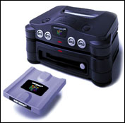

Cette extension annoncée depuis des lustres
est l'objet des toutes les curiosités.
Si l'extension sort un jour elle apportera certainement
un plus non négligeable.
On pourra avoir des jeux plus longs, plus beaux...
mais surtout moins cher sur des disquettes de plus grande capacité.
En plus de ça on pourra acheter des Adds-on pour nos jeux normaux,
comme pour F-Zero X ou l'on pourra construire ses niveaux puis les enregistrer
sur le disque DD qui est INSCRIPTIBLE.
Il se pourrait aussi que le DD64 soit équipé
d'un modem permettant des parties via la ligne téléphoniques.
Imaginez un peu un GoldenEye ou un MarioKart à plus de 4! On pourrait
aussi acheter des disques vierges pour s'en servir comme carte mémoire
géante ou même télécharger des jeux grace au
modem...(pourquoi pas ?).
En tous cas, le 64DD n'est pas encore sorti et
selon de forte rumeurs il ne sortira dans un premier temps qu'au Japon
et cela cet été au plus tôt ! ...
En plus on voit mal comment Nintendo pourra rivaliser
en terme de puissance avec la Dreamcast et il serait peut-etre plus judicieux
de preparer la relève de cet echec relatif qu'a été
la Nintendo 64...